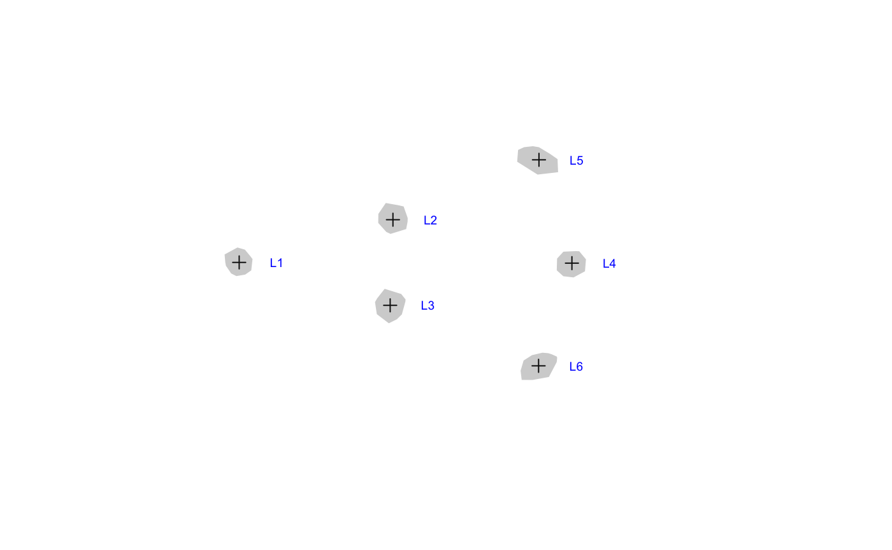
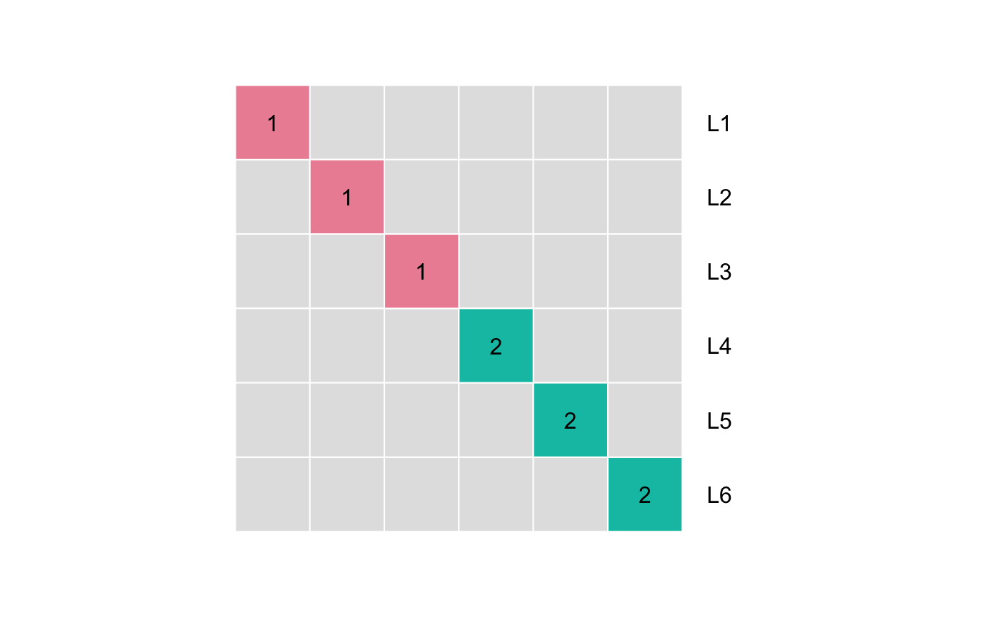
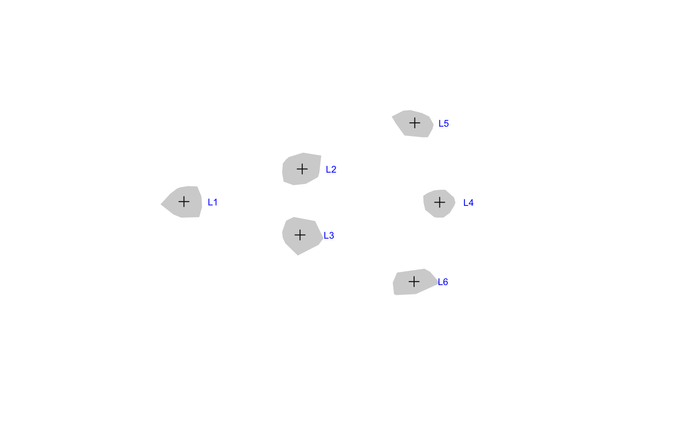

Parametric estimation
Peter Solymos
edma03-parametric.RmdIntroduction
This tutorial describes how to estimate SigmaK and assess if it is estimable. Parametric estimation of SigmaK involves the following steps:
- non-parametric estimation of mean form and SigmaKstar using the
edma_fitfunction, - constructing of a pattern matrix based on biology of landmarks and respecting statistical constraints,
- use the
SigmaK_fitto estimate SigmaK using the non-parametric fit and the pattern matrix, - make sure the results are estimable by running
sensitivityanalysis.
Simulated landmark data
To demonstrate the workflow, let us simulate some data. Simulation is useful for checking the limits of the estimating procedure. We know what the ‘true’ input are, because we are controlling those through the simulation. We can then compare the outputs (our estimates), to the known imputs, and this is how we evaluate the utility and limitations of our methods.
Let us begin with the following set of 6 landmarks in 2-dimensions:
(M <- array(
c(82, 21, 22, -50, -37, -37,
0, 17, -17, 0, 41, -41),
dim=c(6, 2),
dimnames=list(paste0("L", 1:6), c("X", "Y"))))
#> X Y
#> L1 82 0
#> L2 21 17
#> L3 22 -17
#> L4 -50 0
#> L5 -37 41
#> L6 -37 -41
plot(M, pch=3, asp=1, axes=FALSE, ann=FALSE, type="n")
text(M, labels=rownames(M), col=4)
The simplest SigmaK variance-covariance matrix is \(\sigma^2 I\), that is constant variance (\(\sigma^2\)) in the diagonal of the \(6\times6\) square matrix and 0’s in all the off-diagonal cells:
sigma <- 2
SigmaK <- diag(sigma^2, 6, 6)
dimnames(SigmaK) <- list(rownames(M), rownames(M))
print_tb(SigmaK)
#> L1 L2 L3 L4 L5 L6
#> L1 4 . . . . .
#> L2 . 4 . . . .
#> L3 . . 4 . . .
#> L4 . . . 4 . .
#> L5 . . . . 4 .
#> L6 . . . . . 4We can use the edma_simulate_data function to simulate n specimen given form matrix M and covariance matrix SigmaK:
n <- 1000
sim <- edma_simulate_data(n=n, M, SigmaK)
tmp <- plot_2d(sim, xlim=c(-80, 100), ylim=c(-60, 60), asp=1)
xy <- attr(tmp, "coordinates")
text(xy[,1]+15, xy[,2], labels=rownames(xy), cex=0.6, col=4)
We can see from the figure that the constant variance stranslates to roughly circle shaped convex hulls around the landmarks (the hull bounds the landmarks form the n specimens), and the size of these patches is similar (equal variances).
Nonparametruc estimation
We use the non-parametric EDMA algorithm to estimate the form matrix and the SigmaKstar matrix:
Because we used simulations, we can compare the known M matrix with the estimated mean form:
M # true
#> X Y
#> L1 82 0
#> L2 21 17
#> L3 22 -17
#> L4 -50 0
#> L5 -37 41
#> L6 -37 -41
round(Meanform(fit), 2) # estimate
#> X Y
#> L1 -81.87 0.12
#> L2 -20.80 17.10
#> L3 -21.89 -16.96
#> L4 50.30 -0.17
#> L5 37.20 40.95
#> L6 37.06 -41.03The ‘true’ SigmaKstar matrix is stored in our simulation object:
tmp <- attr(sim, "simulation_settings")$SigmaKstar
round(tmp, 2)
#> L1 L2 L3 L4 L5 L6
#> L1 3.33 -0.67 -0.67 -0.67 -0.67 -0.67
#> L2 -0.67 3.33 -0.67 -0.67 -0.67 -0.67
#> L3 -0.67 -0.67 3.33 -0.67 -0.67 -0.67
#> L4 -0.67 -0.67 -0.67 3.33 -0.67 -0.67
#> L5 -0.67 -0.67 -0.67 -0.67 3.33 -0.67
#> L6 -0.67 -0.67 -0.67 -0.67 -0.67 3.33
round(SigmaKstar(fit), 2)
#> L1 L2 L3 L4 L5 L6
#> L1 3.43 -0.68 -0.58 -0.81 -0.90 -0.46
#> L2 -0.68 3.42 -0.70 -0.70 -0.64 -0.71
#> L3 -0.58 -0.70 3.50 -0.84 -0.72 -0.66
#> L4 -0.81 -0.70 -0.84 3.55 -0.42 -0.77
#> L5 -0.90 -0.64 -0.72 -0.42 3.22 -0.54
#> L6 -0.46 -0.71 -0.66 -0.77 -0.54 3.14Pattern matrix
The parametric estimation requires a pattern matrix that describes the unknowns in the SigmaK matrix. This SigmaK matrix is the variance covariance matrix describing the variances (diagonal) associated with each landmark, and the covariances (off-diagonal) among the landmarks.
The pattern matrix can be constructed in R, but when the number of landmarks is high and variances are expected to differ among the landmarks, it might be easier to construct the pattern matrix in a spreadsheet editor (Excel). Here is how the file should be constructed (the package contains example files, see ?read_pattern):
- the 1st row describes the landmarks starting from the 2nd column,
- the 1st column describes the landmarks in the same order as the column headers,
- leave the cell in the topleft corner empty,
- use unique names or numbers in the rest of the table to denote unique variables in the Sigma matrix,
- structural zeros (cells where the covariance is known or assumed to be 0) have to be blank,
- there cannot be blank cells in the diagonal of the matrix,
- values below and above the diagonal must be symmetric (value in row 2/column 3 must be the same as row 3/column 2), either unique names or numbers, or blank.
The pattern matrix for the equal variance case looks like this:
p <- matrix(
c("1", NA, NA, NA, NA, NA,
NA, "1", NA, NA, NA, NA,
NA, NA, "1", NA, NA, NA,
NA, NA, NA, "1", NA, NA,
NA, NA, NA, NA, "1", NA,
NA, NA, NA, NA, NA, "1"),
nrow=6, ncol=6, byrow=TRUE)
dimnames(p) <- list(rownames(M), rownames(M))
print_tb(p)
#> L1 L2 L3 L4 L5 L6
#> L1 1 . . . . .
#> L2 . 1 . . . .
#> L3 . . 1 . . .
#> L4 . . . 1 . .
#> L5 . . . . 1 .
#> L6 . . . . . 1Parametric estimation
The parametric estimation requires the fitted object from the previous step of nonparamatric estimation (that gave us the estimate of the mean form and SigmaKstar), and the pattern matrix, so that the program knows what parameters to estimate and where those are placed in the SigmaK matrix:
(o <- SigmaK_fit(fit, p))
#> EDMA parametric fit: Simulated landmark data
#> Call: SigmaK_fit(object = fit, pattern = p)
#> 2 dimensions, 6 landmarks, 1000 replicates, no bootstrapNow let us compare the ‘true’ SigmaK matrix with the estimated one:
print_tb(SigmaK) # true
#> L1 L2 L3 L4 L5 L6
#> L1 4 . . . . .
#> L2 . 4 . . . .
#> L3 . . 4 . . .
#> L4 . . . 4 . .
#> L5 . . . . 4 .
#> L6 . . . . . 4
print_tb(round(SigmaK(o), 2)) # estimate
#> L1 L2 L3 L4 L5 L6
#> L1 4.05 . . . . .
#> L2 . 4.05 . . . .
#> L3 . . 4.05 . . .
#> L4 . . . 4.05 . .
#> L5 . . . . 4.05 .
#> L6 . . . . . 4.05Sensitivity analysis
The parametric estimate is based on an optimization algorithm. This algorithm requires starting values for the unknown parameters. If a given parametric model’s parameters are estimable, we end up with the exact same estimates no matter what starting values we use. This can be used to check the estimability of our parameters. The sensitivity function repeats the parametric estimation multiple times using different starting values:
(s <- sensitivity(o))
#> par_1 value
#> [1,] 4.052326 0.6388063
#> [2,] 4.052429 0.6388066
#> [3,] 4.052032 0.6388063
#> [4,] 4.051841 0.6388068
#> [5,] 4.052242 0.6388063
#> [6,] 4.052274 0.6388063
#> [7,] 4.052403 0.6388065
#> [8,] 4.052082 0.6388063
#> [9,] 4.052070 0.6388063
#> [10,] 4.052437 0.6388066
#> [11,] 4.052413 0.6388065The par_1 column shows the parameter estimates for the variance, the value column shows the value of the loss function evaluated at par_1. Both these values are constant, which is a sign of estimability.
Unequal variance case
In the unequal variance case we can have different variances for the different landmarks. Here is the corresponding pattern matrix:
p <- matrix(
c("1", NA, NA, NA, NA, NA,
NA, "1", NA, NA, NA, NA,
NA, NA, "1", NA, NA, NA,
NA, NA, NA, "2", NA, NA,
NA, NA, NA, NA, "2", NA,
NA, NA, NA, NA, NA, "2"),
nrow=6, ncol=6, byrow=TRUE)
dimnames(p) <- list(rownames(M), rownames(M))
plot_tb(p)
The SigmaK matrix looks like this:
parm <- c("1"=12, "2"=8)
SigmaK <- EDMAinR:::.vec2mat(parm, EDMAinR:::.mat2fac(p))
dimnames(SigmaK) <- dimnames(p)
print_tb(SigmaK)
#> L1 L2 L3 L4 L5 L6
#> L1 12 . . . . .
#> L2 . 12 . . . .
#> L3 . . 12 . . .
#> L4 . . . 8 . .
#> L5 . . . . 8 .
#> L6 . . . . . 8The unequal variances translate to the following simulated data:
sim <- edma_simulate_data(n=n, M, SigmaK)
tmp <- plot_2d(sim, xlim=c(-80, 100), ylim=c(-60, 60), asp=1)
xy <- attr(tmp, "coordinates")
text(xy[,1]+15, xy[,2], labels=rownames(xy), cex=0.6, col=4)
We can see the different sizes of the convex hulls corresponding to the variances for each landmark.
For the estimation, we use edma_fit and SigmaK_fit as before:
fit <- edma_fit(sim)
o <- SigmaK_fit(fit, p)
print_tb(SigmaK) # true
#> L1 L2 L3 L4 L5 L6
#> L1 12 . . . . .
#> L2 . 12 . . . .
#> L3 . . 12 . . .
#> L4 . . . 8 . .
#> L5 . . . . 8 .
#> L6 . . . . . 8
print_tb(round(SigmaK(o), 2)) # estimate
#> L1 L2 L3 L4 L5 L6
#> L1 11.40 . . . . .
#> L2 . 11.40 . . . .
#> L3 . . 11.40 . . .
#> L4 . . . 8.37 . .
#> L5 . . . . 8.37 .
#> L6 . . . . . 8.37
round(s <- sensitivity(o), 3)
#> par_1 par_2 value
#> [1,] 11.400 8.366 2.482
#> [2,] 11.400 8.366 2.482
#> [3,] 11.400 8.368 2.482
#> [4,] 11.400 8.367 2.482
#> [5,] 11.402 8.367 2.482
#> [6,] 11.402 8.366 2.482
#> [7,] 11.401 8.368 2.482
#> [8,] 11.400 8.367 2.482
#> [9,] 11.400 8.367 2.482
#> [10,] 11.400 8.367 2.482
#> [11,] 11.399 8.366 2.482Correlations
We can add correlations between the frontal (L1) and lateral (L2, L3) landmarks, and similarly to the other 3 landmarks:
p <- matrix(
c("1", "2", "2", NA, NA, NA,
"2", "1", NA, NA, NA, NA,
"2", NA, "1", NA, NA, NA,
NA, NA, NA, "3", "4", "4",
NA, NA, NA, "4", "3", NA,
NA, NA, NA, "4", NA, "3"),
nrow=6, ncol=6, byrow=TRUE)
dimnames(p) <- list(rownames(M), rownames(M))
plot_tb(p)
The SigmaK matrix looks like this:
parm <- c("1"=12, "2"=1, "3"=8, "4"=2)
SigmaK <- EDMAinR:::.vec2mat(parm, EDMAinR:::.mat2fac(p))
dimnames(SigmaK) <- dimnames(p)
print_tb(SigmaK)
#> L1 L2 L3 L4 L5 L6
#> L1 12 1 1 . . .
#> L2 1 12 . . . .
#> L3 1 . 12 . . .
#> L4 . . . 8 2 2
#> L5 . . . 2 8 .
#> L6 . . . 2 . 8The unequal variances translate to the following simulated data:
sim <- edma_simulate_data(n=n, M, SigmaK)
tmp <- plot_2d(sim, xlim=c(-80, 100), ylim=c(-60, 60), asp=1)
xy <- attr(tmp, "coordinates")
text(xy[,1]+15, xy[,2], labels=rownames(xy), cex=0.6, col=4)
This setup seems estimable:
fit <- edma_fit(sim)
o <- SigmaK_fit(fit, p)
print_tb(SigmaK) # true
#> L1 L2 L3 L4 L5 L6
#> L1 12 1 1 . . .
#> L2 1 12 . . . .
#> L3 1 . 12 . . .
#> L4 . . . 8 2 2
#> L5 . . . 2 8 .
#> L6 . . . 2 . 8
print_tb(round(SigmaK(o), 2)) # estimate
#> L1 L2 L3 L4 L5 L6
#> L1 12.19 1.31 1.31 . . .
#> L2 1.31 12.19 . . . .
#> L3 1.31 . 12.19 . . .
#> L4 . . . 8.00 2.26 2.26
#> L5 . . . 2.26 8.00 .
#> L6 . . . 2.26 . 8.00
round(s <- sensitivity(o), 3)
#> par_1 par_2 par_3 par_4 value
#> [1,] 12.185 1.307 7.996 2.260 2.813
#> [2,] 12.185 1.307 7.997 2.260 2.813
#> [3,] 12.186 1.306 7.997 2.260 2.813
#> [4,] 12.185 1.306 7.999 2.260 2.813
#> [5,] 12.186 1.306 7.998 2.260 2.813
#> [6,] 12.186 1.306 7.997 2.260 2.813
#> [7,] 12.186 1.308 7.995 2.259 2.813
#> [8,] 12.188 1.306 7.998 2.259 2.813
#> [9,] 12.187 1.308 7.996 2.258 2.813
#> [10,] 12.186 1.307 7.995 2.260 2.813
#> [11,] 12.186 1.306 7.998 2.259 2.813Non-estimable case: equi-correlation
The following parametrization is non identifiable:
p <- matrix(
c("1", "2", "2", "2", "2", "2",
"2", "1", "2", "2", "2", "2",
"2", "2", "1", "2", "2", "2",
"2", "2", "2", "1", "2", "2",
"2", "2", "2", "2", "1", "2",
"2", "2", "2", "2", "2", "1"),
nrow=6, ncol=6, byrow=TRUE)
dimnames(p) <- list(rownames(M), rownames(M))
plot_tb(p)
The diagonal elements are \(\sigma^2\) (equal variance), the off diagonal elements are \(\sigma^2\rho\) where \(\rho\) is the correlation:
parm <- c("1"=10, "2"=2)
SigmaK <- EDMAinR:::.vec2mat(parm, EDMAinR:::.mat2fac(p))
dimnames(SigmaK) <- dimnames(p)
print_tb(SigmaK)
#> L1 L2 L3 L4 L5 L6
#> L1 10 2 2 2 2 2
#> L2 2 10 2 2 2 2
#> L3 2 2 10 2 2 2
#> L4 2 2 2 10 2 2
#> L5 2 2 2 2 10 2
#> L6 2 2 2 2 2 10The correlation lead to more ellipsoid shapes for the simulated landmarks:
sim <- edma_simulate_data(n=n, M, SigmaK)
tmp <- plot_2d(sim, xlim=c(-80, 100), ylim=c(-60, 60), asp=1)
xy <- attr(tmp, "coordinates")
text(xy[,1]+15, xy[,2], labels=rownames(xy), cex=0.6, col=4)
fit <- edma_fit(sim)
o <- SigmaK_fit(fit, p)
print_tb(SigmaK) # true
#> L1 L2 L3 L4 L5 L6
#> L1 10 2 2 2 2 2
#> L2 2 10 2 2 2 2
#> L3 2 2 10 2 2 2
#> L4 2 2 2 10 2 2
#> L5 2 2 2 2 10 2
#> L6 2 2 2 2 2 10
print_tb(round(SigmaK(o), 2)) # estimate
#> L1 L2 L3 L4 L5 L6
#> L1 3.91 -3.80 -3.80 -3.80 -3.80 -3.80
#> L2 -3.80 3.91 -3.80 -3.80 -3.80 -3.80
#> L3 -3.80 -3.80 3.91 -3.80 -3.80 -3.80
#> L4 -3.80 -3.80 -3.80 3.91 -3.80 -3.80
#> L5 -3.80 -3.80 -3.80 -3.80 3.91 -3.80
#> L6 -3.80 -3.80 -3.80 -3.80 -3.80 3.91
(s <- sensitivity(o))
#> par_1 par_2 value
#> [1,] 3.907063 -3.795951 2.046023
#> [2,] 3.675514 -4.027921 2.046023
#> [3,] 3.807901 -3.895410 2.046023
#> [4,] 3.532950 -4.170289 2.046023
#> [5,] 3.553277 -4.149575 2.046024
#> [6,] 3.780534 -3.922920 2.046023
#> [7,] 3.543127 -4.160532 2.046023
#> [8,] 4.003448 -3.700661 2.046026
#> [9,] 3.641527 -4.062460 2.046025
#> [10,] 4.088417 -3.615126 2.046023
#> [11,] 3.773931 -3.929638 2.046023The sensitivity analysis reveals that we get different estimates when using different starting values. Although the estimates differ greatly, the loss function values are identical. Therefore, we cannot decide which estimate is the best, these are equally bad, i.e. non-estimable.
Non-estimable case: blocks
We can add correlations between the frontal (L1) and lateral (L2, L3) landmarks, and similarly to the other 3 landmarks:
p <- matrix(
c("1", "2", "2", NA, NA, NA,
"2", "1", "2", NA, NA, NA,
"2", "2", "1", NA, NA, NA,
NA, NA, NA, "3", "4", "4",
NA, NA, NA, "4", "3", "4",
NA, NA, NA, "4", "4","3"),
nrow=6, ncol=6, byrow=TRUE)
dimnames(p) <- list(rownames(M), rownames(M))
plot_tb(p)
The SigmaK matrix looks like this:
parm <- c("1"=12, "2"=1, "3"=8, "4"=2)
SigmaK <- EDMAinR:::.vec2mat(parm, EDMAinR:::.mat2fac(p))
dimnames(SigmaK) <- dimnames(p)
print_tb(SigmaK)
#> L1 L2 L3 L4 L5 L6
#> L1 12 1 1 . . .
#> L2 1 12 1 . . .
#> L3 1 1 12 . . .
#> L4 . . . 8 2 2
#> L5 . . . 2 8 2
#> L6 . . . 2 2 8The unequal variances translate to the following simulated data:
sim <- edma_simulate_data(n=n, M, SigmaK)
tmp <- plot_2d(sim, xlim=c(-80, 100), ylim=c(-60, 60), asp=1)
xy <- attr(tmp, "coordinates")
text(xy[,1]+15, xy[,2], labels=rownames(xy), cex=0.6, col=4)
This setup seems estimable:
fit <- edma_fit(sim)
o <- SigmaK_fit(fit, p)
print_tb(SigmaK) # true
#> L1 L2 L3 L4 L5 L6
#> L1 12 1 1 . . .
#> L2 1 12 1 . . .
#> L3 1 1 12 . . .
#> L4 . . . 8 2 2
#> L5 . . . 2 8 2
#> L6 . . . 2 2 8
print_tb(round(SigmaK(o), 2)) # estimate
#> L1 L2 L3 L4 L5 L6
#> L1 15.10 3.93 3.93 . . .
#> L2 3.93 15.10 3.93 . . .
#> L3 3.93 3.93 15.10 . . .
#> L4 . . . 5.06 -1.09 -1.09
#> L5 . . . -1.09 5.06 -1.09
#> L6 . . . -1.09 -1.09 5.06
round(s <- sensitivity(o), 3)
#> par_1 par_2 par_3 par_4 value
#> [1,] 15.099 3.934 5.058 -1.089 4.109
#> [2,] 15.880 5.277 0.000 -7.552 61.405
#> [3,] 18.812 7.646 1.346 -4.800 4.109
#> [4,] 1.527 -9.639 18.631 12.486 4.109
#> [5,] 18.885 6.676 0.000 -7.816 33.225
#> [6,] 18.910 7.745 1.248 -4.899 4.109
#> [7,] 3.129 -8.038 17.030 10.884 4.109
#> [8,] 17.472 5.730 0.000 -8.577 66.108
#> [9,] 0.477 -10.689 19.682 13.536 4.109
#> [10,] 5.998 -5.167 14.160 8.014 4.109
#> [11,] 16.953 6.918 0.003 -6.285 21.250